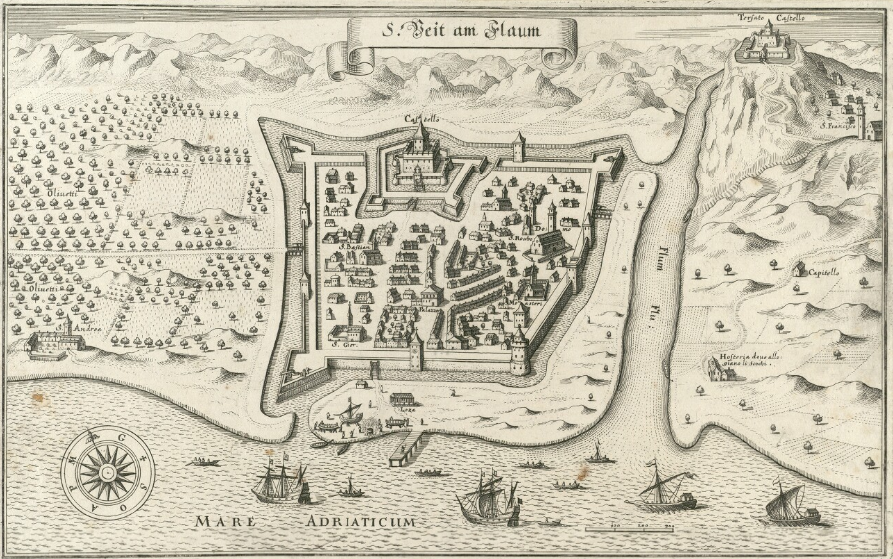

Index locorum in CroALa
Annotating place names in early modern Latin texts
Nina Čengić / nina.cengic@gmail.com
University of Zagreb
Madrid, 15-16 December 2016
This page: croala.ffzg.unizg.hr/croala-index-locorum/
Repository: github.com/nevenjovanovic/croala-pelagios
The Plan
Research
Texts
Means and materials
Results
The texts
History: Crijević Tubero, Commentarii de temporibus suis, c. 1525
Epic: Bunić, De raptu Cerberi, c. 1490
Oratory: Nikola Modruški, Funerary oration for Cardinal P. Riario, 1474
Poetry: Marulić, Carmina (c. 1500) and Crijević, Carmina (c. 1500)
The plan
Research
Texts
Means and materials
Results
The system

Cite Architecture
Neel Smith and Christopher Blackwell, 2006-
Each text segment and each annotation have their own URN
The URNs are used to create an index
What is a place name
estlocus0
- not a place name
estlocus1
- is a place name
estlocus2
- place name consisting of two words or more
estlocus3
- place name construed as metonymy
estlocus4
- for further consideration
Place name consisting of two words or more

A place in time
Theory
Geographical
Cultural
Cultural place changes over time
Practice
Index locorum: croala.ffzg.unizg.hr/basex/cp-loci-id/corpus
Rome: croala.ffzg.unizg.hr/basex/cite/urn:cite:croala:loci.locid05214
Fact / fiction
Fact / fiction
Achelous river
urn:cite:croala:loci:locid38525
Fiction / fact
Acheron
Conclusion
We have set out to annotate place names in selected Croatian Latin texts from the Renaissance. We have qualified the placeness of place names, described their linguistic form, linked the words to things (actual or imaginary places), and located the things in time (again actual or imaginary). We were able to put it all together by connecting annotations to text segments following the CITE Architecture concepts.
Digital annotations, each of them brief, simple, and almost without usual scholarly prose, thus become a more structured and more manipulable scholarly commentary. Its real complexity appears when we start to examine connections of these simple, atomic annotations in their molecular configurations.